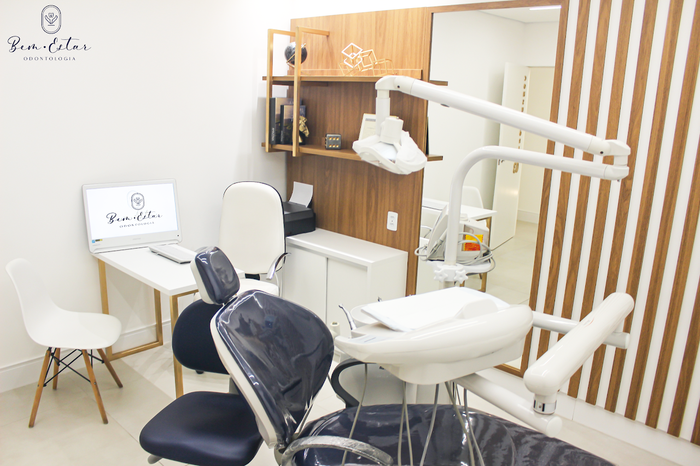
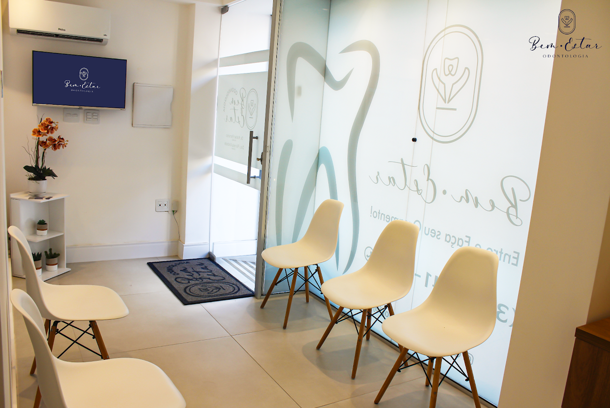

Odontologia completa · Santa Luzia
Seu sorriso merece se sentir em casa.
Cuidado próximo, estrutura completa e tratamentos para todas as fases do seu sorriso — em um espaço real, acolhedor e acessível em Juiz de Fora.


A clínica
Desde 2016 construindo sorrisos em Santa Luzia.
A Bem-Estar Odontologia está no bairro Santa Luzia, em Juiz de Fora, desde 2016 — e vem construindo uma história de transformações e sorrisos na vida de centenas de pessoas.
Sob os cuidados da Dra. Pâmela Andrade e do Dr. Rafael Pomarico, o consultório reúne no mesmo lugar tratamentos que vão da prevenção à reabilitação, em um ambiente pensado para que você se sinta à vontade desde a recepção.
- 2016
- no bairro Santa Luzia
- 5,0
- nota no Google, com 111 avaliações
- 12
- tratamentos no mesmo consultório
- 2
- cirurgiões-dentistas cuidando de você
- Ambiente acolhedor
- Equipamentos modernos
- Explicação em cada etapa
Tratamentos
Tudo o que o seu sorriso pede, num só lugar.
A indicação de cada tratamento depende sempre de uma avaliação individual. Passe o cursor — ou toque — para conhecer cada um.
-
Implante
Um pino de titânio substitui a raiz de um dente perdido e serve de base para a nova coroa.
-
Protocolo
Prótese fixa sobre implantes para quem perdeu os dentes de uma arcada inteira.
-
Aparelhos ortodônticos
Ortodontia para corrigir a posição dos dentes e o encaixe da mordida, com acompanhamento a cada etapa.
-
Próteses
Coroas, pontes e próteses que repõem dentes perdidos e devolvem função à mastigação.
-
Canal
Trata a parte interna do dente quando ela está inflamada ou infeccionada, buscando preservá-lo.
-
Facetas e lentes de contato
Lâminas finas sobre a face visível dos dentes para harmonizar forma e cor, após avaliar a saúde bucal.
E também
- Clareamento
- Restauração dentária
- Extração de sisos
- Gengivoplastia
- Enxerto ósseo
- Harmonização facial
A experiência
Entender cada passo faz parte do cuidado.
- Acolhimento
Um consultório pensado para que ir ao dentista seja tranquilo, desde a recepção.
- Explicação
Antes de qualquer procedimento, você entende o diagnóstico e as opções.
- Estrutura
Equipamentos modernos e tratamentos que vão da prevenção à reabilitação no mesmo lugar.


“Um sorriso cuidado é um sorriso tranquilo.”
Imagens ilustrativas. Veja o consultório real no Instagram da clínica.
Quem cuida de você
Dois olhares, o mesmo cuidado.
-
Dra. Pâmela Andrade
Cirurgiã-dentista · CRO-MG 44621
-
Dr. Rafael Pomarico
Cirurgião-dentista
Depoimentos
Quem passou por aqui conta.
5,0111 avaliações no Google
“Ambiente acolhedor, profissionalismo, dentistas excelentes e competentes!”
Bárbara de Faria Gonçalves · Google
“A Dra Pamela e o Dr Rafael são excelentes profissionais, super recomendo!”
Israel Pol · Google
“Clínica linda, com equipamentos modernos e um atendimento excelente.”
Mirlene Nonata · Google
Dúvidas frequentes
Como faço para agendar?
Pelo WhatsApp (32) 98402-1717. É só mandar uma mensagem contando o que você precisa que o horário é combinado com você.
Como funciona a primeira consulta?
Tudo começa por uma avaliação: o caso é examinado, conversado e as possibilidades de tratamento são explicadas. Traga suas dúvidas — elas fazem parte da consulta.
Quais tratamentos a clínica oferece?
Implante, protocolo, aparelhos ortodônticos, próteses, tratamento de canal, facetas e lentes de contato, clareamento, restauração, extração de sisos, gengivoplastia, enxerto ósseo e harmonização facial. A indicação de cada um depende da avaliação.
Perdi um dente. Implante ou prótese?
Depende de fatores como a saúde da gengiva, a quantidade de osso e as suas necessidades. Só a avaliação clínica permite indicar o melhor caminho.
Quais são os horários de atendimento?
O atendimento é com hora marcada. Confira os horários disponíveis pelo WhatsApp (32) 98402-1717.
Agendamento
Vamos cuidar do seu sorriso?
Mande uma mensagem e agende sua avaliação.
Conversar pelo WhatsApp